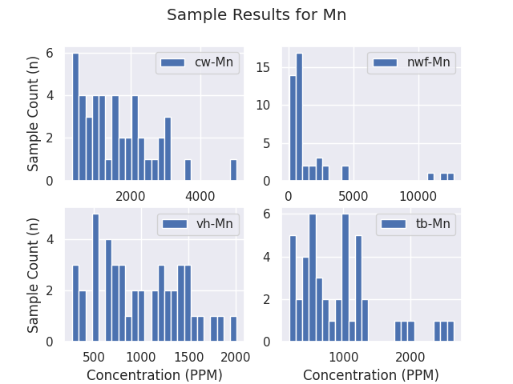
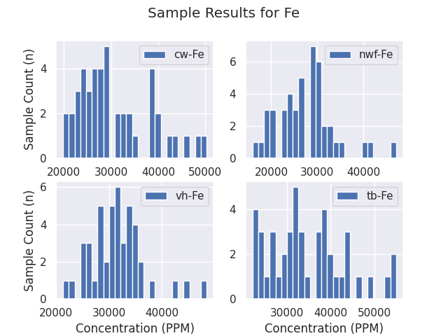
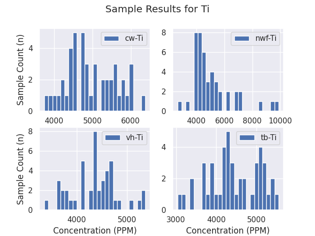
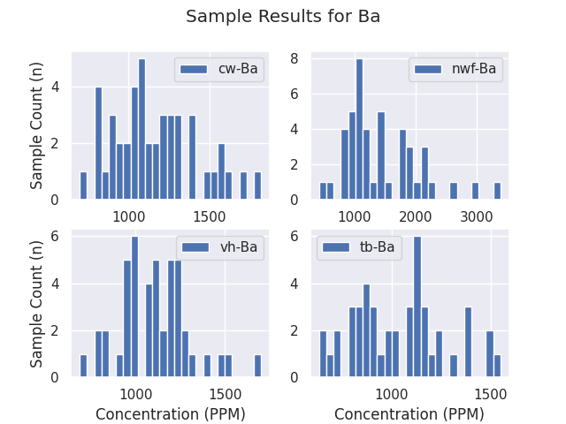
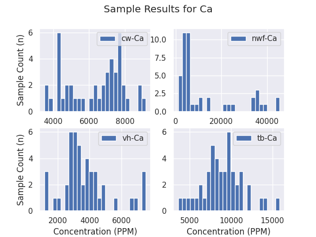
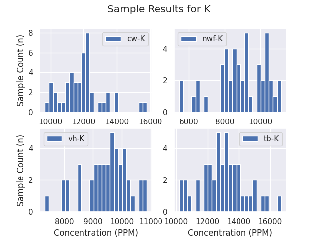
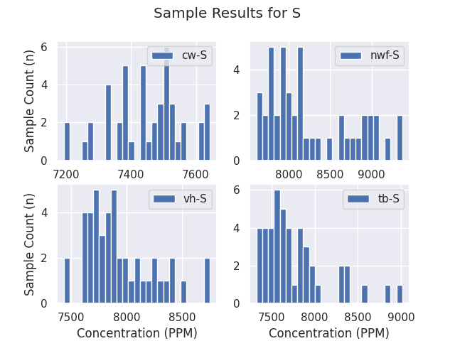
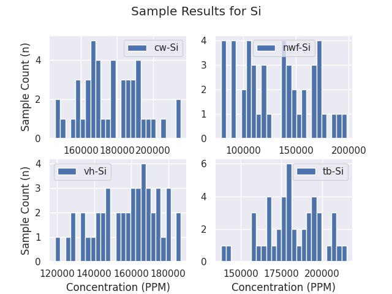
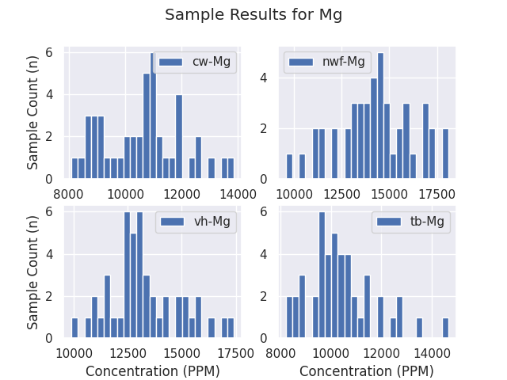

type Na Mg Al Si P S K \
0 gneiss 1907.29 8580.34 40664.61 213027.38 115.68 7086.07 18858.64
1 granite 2119.29 7305.64 48622.88 244125.58 260.31 7111.15 39262.68
2 schist 6236.06 7693.39 38807.44 134389.48 133.24 6563.69 10603.84
3 Average 3420.88 7859.79 42698.31 197180.81 169.75 6920.31 22908.39
Ca Ba Ti V Cr Mn Fe Co \
0 22160.90 676.71 1450.43 46.47 780.32 338.96 21002.34 -20.85
1 7795.43 1036.50 347.09 65.27 771.27 17.06 8256.38 -36.51
2 55639.43 835.59 4537.50 240.76 195.70 1614.89 70691.95 32.67
3 28531.92 849.60 2111.67 117.50 582.43 656.97 33316.89 -8.23
Ni Cu Zn
0 249.28 103.28 133.43
1 260.31 127.42 179.07
2 118.16 36.35 132.94
3 209.25 89.02 148.48
Summary: Manganese is a chemical element with symbol Mn and atomic number 25. It is not found as a free element in nature; it is often found in combination with iron, and in many minerals. Manganese is a metal with important industrial metal alloy uses, particularly in stainless steels.
Category: transition metal
Number: 25
Atomic Mass: 54.9380443
count 45.000000
mean 1607.121765
std 1032.125934
min 309.894154
25% 746.008580
50% 1489.927203
75% 2105.309052
max 5047.359100
count 45.000000
mean 1765.441567
std 2942.957936
min 49.986346
25% 349.551144
50% 713.580784
75% 1832.511752
max 12727.966900
count 45.000000
mean 996.853358
std 453.318859
min 275.598479
25% 648.824886
50% 939.933880
75% 1377.316298
max 2006.082905
count 45.000000
mean 938.209050
std 610.181611
min 198.204463
25% 491.381687
50% 844.049082
75% 1204.347826
max 2636.067973

Summary: Iron is a chemical element with symbol Fe (from Latin:ferrum) and atomic number 26. It is a metal in the first transition series. It is by mass the most common element on Earth, forming much of Earth's outer and inner core.
Category: transition metal
Number: 26
Atomic Mass: 55.8452
count 45.000000
mean 30718.451657
std 7769.905274
min 19880.077290
25% 24931.443660
50% 28802.999400
75% 35548.040910
max 50263.914700
count 45.000000
mean 27403.927052
std 6289.044140
min 15937.687030
25% 23878.858030
50% 26746.872330
75% 30278.721620
max 47126.393700
count 45.000000
mean 31574.306099
std 5179.618887
min 21302.898190
25% 28588.551740
50% 31406.275120
75% 34051.766430
max 48492.070900
count 45.000000
mean 34617.602591
std 8634.558639
min 22226.005020
25% 27556.833370
50% 32747.811710
75% 39797.740810
max 54920.520290

Summary: Titanium is a chemical element with symbol Ti and atomic number 22. It is a lustrous transition metal with a silver color, low density and high strength. It is highly resistant to corrosion in sea water, aqua regia and chlorine.
Category: transition metal
Number: 22
Atomic Mass: 47.8671
count 45.000000
mean 4979.893126
std 647.704955
min 3748.561490
25% 4519.440470
50% 4843.307850
75% 5477.552570
max 6380.946730
count 45.000000
mean 5097.992231
std 1495.588495
min 2660.864710
25% 4200.811720
50% 4557.179950
75% 5370.035720
max 9869.866740
count 45.000000
mean 4359.907092
std 451.528294
min 3362.939710
25% 4099.712000
50% 4394.283450
75% 4613.173300
max 5357.541990
count 45.000000
mean 4438.880488
std 642.897977
min 3039.976410
25% 4009.590080
50% 4349.727220
75% 5042.703660
max 5551.603150

Summary: Barium is a chemical element with symbol Ba and atomic number 56. It is the fifth element in Group 2, a soft silvery metallic alkaline earth metal. Because of its high chemical reactivity barium is never found in nature as a free element.
Category: alkaline earth metal
Number: 56
Atomic Mass: 137.3277
count 45.000000
mean 1163.063197
std 265.106752
min 697.192151
25% 987.709899
50% 1142.202120
75% 1305.962726
max 1821.268794
count 45.000000
mean 1448.827605
std 621.884574
min 418.973124
25% 1016.565544
50% 1239.951387
75% 1836.791646
max 3387.880962
count 45.000000
mean 1108.404108
std 198.698234
min 686.241100
25% 977.028015
50% 1098.743398
75% 1225.763758
max 1703.556760
count 45.000000
mean 1038.209058
std 236.715066
min 634.900370
25% 860.193027
50% 1030.337501
75% 1178.015260
max 1547.855397

Summary: Calcium is a chemical element with symbol Ca and atomic number 20. Calcium is a soft gray alkaline earth metal, fifth-most-abundant element by mass in the Earth's crust. The ion Ca2+ is also the fifth-most-abundant dissolved ion in seawater by both molarity and mass, after sodium, chloride, magnesium, and sulfate.
Category: alkaline earth metal
Number: 20
Atomic Mass: 40.0784
count 45.000000
mean 6341.245428
std 1568.402973
min 3524.260540
25% 4765.137610
50% 6851.496980
75% 7609.749430
max 9155.329430
count 45.000000
mean 12973.787737
std 13775.690253
min 976.421910
25% 3807.698130
50% 5494.462120
75% 21591.665610
max 45469.269500
count 45.000000
mean 3748.147276
std 1549.324163
min 1166.788180
25% 2919.164190
50% 3358.164870
75% 4245.770230
max 7534.011200
count 45.000000
mean 8946.143058
std 2489.455133
min 3615.932600
25% 7616.827530
50% 8789.153580
75% 10066.685510
max 15834.847770

Summary: Potassium is a chemical element with symbol K (derived from Neo-Latin, kalium) and atomic number 19. It was first isolated from potash, the ashes of plants, from which its name is derived. In the Periodic table, potassium is one of seven elements in column (group) 1 (alkali metals):they all have a single valence electron in their outer electron shell, which they readily give up to create an atom with a positive charge - a cation, and combine with anions to form salts.
Category: alkali metal
Number: 19
Atomic Mass: 39.09831
count 45.000000
mean 11913.084738
std 1307.066779
min 9659.817860
25% 11196.392120
50% 11924.155090
75% 12337.350230
max 15798.331390
count 45.000000
mean 8873.700602
std 1435.351231
min 5463.809610
25% 8085.433390
50% 8898.799850
75% 10099.390490
max 11156.277090
count 45.000000
mean 9478.925377
std 794.166291
min 7323.580830
25% 9081.933270
50% 9589.930970
75% 10000.476410
max 10862.282650
count 45.000000
mean 12987.419896
std 1458.001899
min 10198.455310
25% 12097.319760
50% 13007.017500
75% 13831.536510
max 16696.012740

Summary: Sulfur or sulphur (see spelling differences) is a chemical element with symbol S and atomic number 16. It is an abundant, multivalent non-metal. Under normal conditions, sulfur atoms form cyclic octatomic molecules with chemical formula S8.
Category: polyatomic nonmetal
Number: 16
Atomic Mass: 32.06
count 45.000000
mean 7445.791574
std 112.722976
min 7194.559470
25% 7380.730760
50% 7452.689060
75% 7517.515580
max 7643.121060
count 45.000000
mean 8265.781530
std 516.717124
min 7613.027370
25% 7884.142120
50% 8106.512420
75% 8699.829030
max 9369.779190
count 45.000000
mean 7934.598694
std 309.260824
min 7434.844320
25% 7736.677680
50% 7868.122570
75% 8086.091830
max 8751.698070
count 45.000000
mean 7773.945707
std 386.425371
min 7328.088080
25% 7527.425040
50% 7657.317920
75% 7895.361350
max 9011.674690

Summary: Silicon is a chemical element with symbol Si and atomic number 14. It is a tetravalent metalloid, more reactive than germanium, the metalloid directly below it in the table. Controversy about silicon's character dates to its discovery.
Category: metalloid
Number: 14
Atomic Mass: 28.085
count 45.000000
mean 176971.569360
std 16813.152468
min 145760.914200
25% 166825.889000
50% 177034.730000
75% 188521.818000
max 215358.753900
count 45.000000
mean 131747.465839
std 33693.455229
min 78952.344680
25% 103383.272100
50% 136852.383500
75% 158991.447000
max 197962.590800
count 45.000000
mean 157917.883613
std 17154.250088
min 119034.808800
25% 144926.114200
50% 161601.724200
75% 170310.636100
max 186788.590300
count 45.000000
mean 181567.399616
std 17594.645308
min 137849.758800
25% 170675.050300
50% 179994.511600
75% 195453.137900
max 214990.866500

Summary: Magnesium is a chemical element with symbol Mg and atomic number 12. It is a shiny gray solid which bears a close physical resemblance to the other five elements in the second column (Group 2, or alkaline earth metals) of the periodic table:they each have the same electron configuration in their outer electron shell producing a similar crystal structure. Magnesium is the ninth most abundant element in the universe.
Category: alkaline earth metal
Number: 12
Atomic Mass: 24.305
count 45.000000
mean 10618.871620
std 1407.425136
min 8099.008160
25% 9304.960280
50% 10750.544680
75% 11426.306650
max 13860.105120
count 45.000000
mean 14263.685163
std 1989.113108
min 9564.404790
25% 13202.072670
50% 14333.087800
75% 15520.082990
max 18088.716750
count 45.000000
mean 13255.740479
std 1651.315868
min 9900.896010
25% 12341.183590
50% 13072.507630
75% 14258.140860
max 17413.698020
count 45.000000
mean 10391.654267
std 1352.638057
min 8205.813630
25% 9610.966780
50% 10130.888210
75% 10861.581100
max 14649.179540
